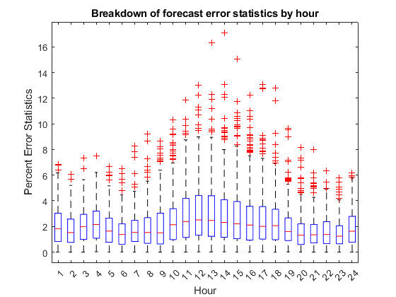
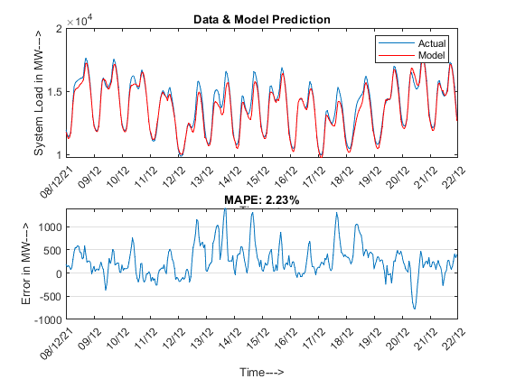

Electricity Load Forecasting using Neural Networks
This example demonstrates building and validating a short term electricity load forecasting model with MATLAB. The models take into account multiple sources of information including temperatures and holidays in constructing a day-ahead load forecaster. This script uses Neural Networks.
Contents
- Import Weather & Load Data
- Import list of holidays
- Generate Predictor Matrix
- Split the dataset to create a Training and Test set
- Initialize and Train Network
- Forecast using Neural Network Model
- Compare Forecast Load and Actual Load
- Examine Distribution of Errors
- Group Analysis of Errors
- Generate Weekly Charts
Import Weather & Load Data
The data set used is a table of historical hourly loads and temperature observations from the New England ISO for the years 2018 to 2022. The weather information includes the dry bulb temperature and the dew point.
load ISONECA_Data4.5AUG.mat
Import list of holidays
A list of New England holidays that span the historical date range is imported from an Excel spreadsheet
[num, text] = xlsread('Holidays4.5AUG.xls');
holidays = text(2:end,1);
Generate Predictor Matrix
The function genPredictors generates the predictor variables used as inputs for the model.
[X, dates, labels] = genPredictors(data2, holidays);
Split the dataset to create a Training and Test set
The dataset is divided into two sets, a training set which includes data from Jan-2018 to Aug-2021 and a test set with data from Sept-2021 to Aug-2022. The training set is used for building the model (estimating its parameters). The testset is used only for forecasting to test the performance of the model on out-of-sample data. Create training set
trainInd = data2.NumDate < datenum('2021-09-01'); trainX = X(trainInd,:); %part of X (predictor matrix) to be trained on trainY = data2.System_Load(trainInd); %part of System_Load (target output) to be trained on % Create test set and save for later testInd = data2.NumDate >= datenum('2021-09-01'); testX = X(testInd,:); %part of X to be tested on testY = data2.System_Load(testInd); %part of System_Load to be tested on testDates = dates(testInd); save testDataAUG.mat testDates testX testY clear X data2 trainInd testInd term holidays dates ans num text
Initialize and Train Network
Initialize a network of two layers with 30 neurons. Then, train the network by choosing a Training Function out of 'trainlm','trainbr' & 'trainscg'
trainFcn = 'trainbr'; % Bayesian Regularization backpropagation. % Create a Fitting Network hiddenLayerSize = 30; net = fitnet(hiddenLayerSize,trainFcn); if ~exist('My_NNModel_AUG8.mat', 'file') net.performFcn = 'mse'; net = train(net, trainX', trainY'); save My_NNModel_AUG9.mat net else load My_NNModel_LM.mat end
Forecast using Neural Network Model
Once the model is built, perform a forecast on the independent test set.
load testDataAUG.mat
forecastLoad = sim(net, testX')';
Compare Forecast Load and Actual Load
Create a plot to compare the actual load and the predicted load as well as compute the forecast error. In addition to the visualization, quantify the performance of the forecaster using metrics such as mean absolute error (MAE), mean absolute percent error (MAPE) and daily peak forecast error.
err = testY-forecastLoad; fitPlot(testDates, [testY forecastLoad], err); errpct = abs(err)./testY*100; %Calculating MAPE for daily peak load hours fL = reshape(forecastLoad, 24, length(forecastLoad)/24)'; tY = reshape(testY, 24, length(testY)/24)'; peakerrpct = abs(max(tY,[],2) - max(fL,[],2))./max(tY,[],2) * 100; MAE = mean(abs(err)); MAPE = mean(errpct(~isinf(errpct))); fprintf('Mean Absolute Percent Error (MAPE): %0.2f%% \nMean Absolute Error (MAE): %0.2f MWh\nDaily Peak MAPE: %0.2f%%\n',... MAPE, MAE, mean(peakerrpct))
Mean Absolute Percent Error (MAPE): 2.17% Mean Absolute Error (MAE): 294.00 MWh Daily Peak MAPE: 1.98%
Examine Distribution of Errors
In addition to reporting scalar error metrics such as MAE and MAPE, the plot of the distribution of the error and absolute error can help build intuition around the performance of the forecaster
figure; subplot(3,1,1); hist(err,100); title('Error distribution'); xlabel('Error (MW)'); subplot(3,1,2); hist(abs(err),100); title('Absolute error distribution');xlabel('Absolute Error (MW)'); line([MAE MAE], ylim); legend('Errors', 'MAE'); subplot(3,1,3); hist(errpct,100); title('Absolute percent error distribution');xlabel('Percent Error (%)'); line([MAPE MAPE], ylim); legend('Errors', 'MAPE');
Group Analysis of Errors
To get further insight into the performance of the forecaster, we can visualize the percent forecast errors by hour of day, day of week and month of the year
[yr, mo, da, hr] = datevec(testDates); % By Hour clf; boxplot(errpct, hr+1); xlabel('Hour'); ylabel('Percent Error Statistics'); title('Breakdown of forecast error statistics by hour'); % By Weekday figure boxplot(errpct, weekday(floor(testDates)), 'labels', {'Sun','Mon','Tue','Wed','Thu','Fri','Sat'}); ylabel('Percent Error Statistics'); title('Breakdown of forecast error statistics by weekday'); % By Month figure boxplot(errpct, datestr(testDates,'mmm')); ylabel('Percent Error Statistics'); title('Breakdown of forecast error statistics by month');
Generate Weekly Charts
Create a comparison of forecast and actual load for every week in the test set.
step = 168*2; %period of 2 weeks for i = 0:step:length(testDates)-step clf; fitPlot(testDates(i+1:i+step), [testY(i+1:i+step) forecastLoad(i+1:i+step)], err(i+1:i+step)); title(sprintf('MAPE: %0.2f%%', mean(errpct(i+1:i+step)))); snapnow %take snapshot of graph for inclusion in published report end